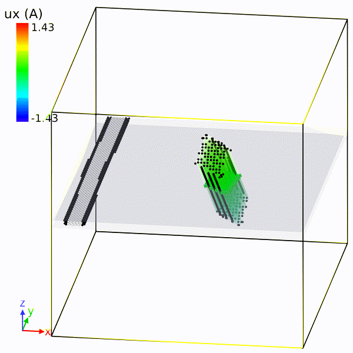
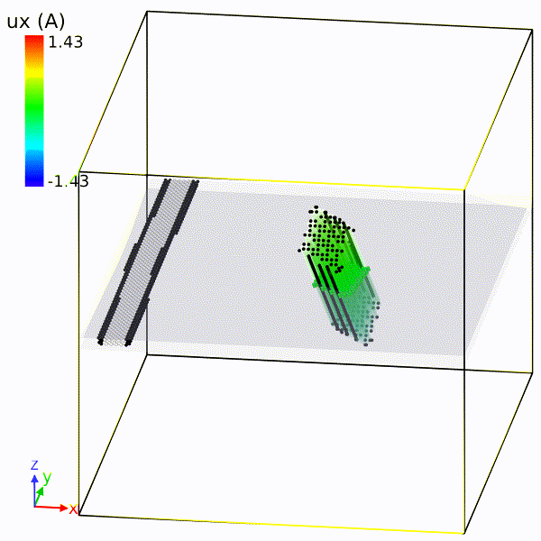

Precipitation Strengthening in Al-Mg-Si alloys
The key to the precipitation strengthening is dislocation-precipitate interaction mechanism, i.e. how precipitates serve as obstacle to impede the movement of dislocation. The entire roadmap of my PhD research is sketched in the following figure.
dislocation core energy
One of the critical quantities in mesoscale simulation is dislocation core energy, which influences the strength of dislocation when bumping into an obstacle. For that, I used a flat cyclinder model to obtain the dislocation core energy for various character angles.
Then I implemented this atomistic information in a widely used Discrete Dislocation Dynamics code (ParaDiS). I found out that the atomistic-informed DDD simulations can match atomistic result for various cases.
Y. Hu et al. 2020 MSMSE
mesoscale study
The incorporation of atomistic core energy makes me ready to invistigate more complex dislocation-precipitate interaction. First, I carried out an extensive mesoscale study, since it is more efficient than atomistic simulations, and the behavior of dislocation is more tractable. The focus of study is peak-aged Al-Mg-Si alloys, indicating that the looping mechanism (Orowan) and shearing mechanism give the same Critical Resolved Shear Stress (CRSS), which is the textbook knowledge. So I would like to see if the simulation with Orowan mechanism can predict the yield strength of the material.
For this purpose, I implemented Orown mechanism in Discrete Dislocation Dynamics, generated representative pseudo-random alloy microstructures and calculated the misfit stress in the microstructure. Extensive DDD simulations were performed for different glide planes of experimentally realistic microstructures. Important factors like precipitate volume fraction, matrix misfit stress, cross section area, system size, microstructures, and dislocation core energies were studied carefully and thouroughly.
However, even with the core energy at finite temperature, we had an overestimate of material yield strength. Then I began to think about the cause of overestimate. A detailed force analysis on individual precipitates implied that multiple precipitates were supposed to be sheared before looped. And a simple shear calculation provides a better agreement with the realistic yield strength.
Y. Hu and W. A. Curtin. 2021 JMPS
atomistic study
After the careful mesoscale study, I hoped to find out what really happens at atomistic scale. Does the precipitate really get sheared? The state-of-art Neural Network Potential gave us the answer. After careful and heavy validation of the potential, we were convinced that the NNP is ready to use for solving realistic mechanics problem. Systematic dislocation-precipitate interaction simulations were carried out. They showed that dislocation can either shear or loop the precipitate, depending on precipitate orientation and precipitate internal misfit stress.

 

efficient DDD with atomistic accuracy
One of the achievments in my research was that I made DDD simulations possess an atomistic accuracy by implementing the key atomistic features (core energy, interaction, misfit stress) in DDD. With lower level critical atomistic information, the DDD dislocation configuration matches quite well with the atomistic one (screw dislocation in the figure). Furthermore, the simulated CRSS is close to the expensive atomistic result. So DDD (with critical atomistic quantities) can be trusted, and costly atomistic simulations can be avoided. This comparision between atomistic and DDD laid the basis for the strength-prediction-model development.
prediction model
Combining the knowledge obtained from mesoscale and atomistic study, we came up with a strategy for CRSS calculation. For looping mechanism, CRSS is calculated by the efficient atomistic-accurate DDD simulation, while for shearing mechanism, we have a validated prediction model. The lesser of two is the controlling mechanism. The prediction involves material properties (from ab-initio calculations) as well as geometry quantities, which can be optimized so that a maximal CRSS is attained.
For a realistic material, one needs to take into account many other factors, like the random arrangement of precipitate in a real system. I did a careful DDD study to demonstrate that a random factor can characterize this effect. A simplified prediction procedure is presented in the following figure.